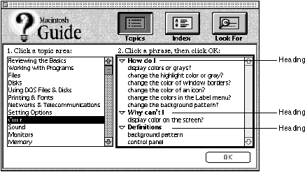

Designing Topic Areas and Topics
A topic area is a broad category of help that subsumes one or more topics and that appears in the left column of the Full Access window only when Topics features are selected. A topic is a category of help information that the user selects from an access window. Here is the way that topic areas and topics appear in Full Access, Single List Access, and Simple Access windows:When creating topics for the Full Access window, you should organize your topics under headings. You can also use headings in the Single List Access window if it contains multilevel topics. For the Full Access and Single List access windows, try to minimize the number of topics (and topic areas) so that the user doesn't have to scroll to view an entire column.
- In the Full Access window with Topics selected, topic areas appear in the left column and individual topics appear in the right column (see Figure 2-9). With Index or Look For selected, no topic areas appear in the left column but topics appear in the right column.
- In the Single Access window, topics appear in a single scrollable column.
- In the Simple Access window, topics can appear in an access route that you provide, or the user can go directly to topics.
The sections that follow explain how to create topics for each access window type and how to use headers.
- Note
- If you add a Mixin guide file to your guide file, its additional topics (and topic areas) appear among the existing topics (and topic areas) in the guide file. You can integrate topic areas and topics of the mixin into those of your guide file using Guide Script commands. For more information on the <Mixin> command, see the chapter "Guide Script Command Reference."

Designing Topic Areas and Topics for a Full Access Window
In the Full Access window, you must provide both topic areas (for when Topics features are selected) and topics.Your list of topic areas should be a logical outline of the guide file contents, similar to the table of contents for a book. Keep topic area names short--no more than 31 characters--and use initial capitalization for each main phrase. For example, for a word-processing application, you could use such topic areas as "Files" and "Fonts and Formatting". Apple Guide lists the topic areas in the order in which they appear in your source files. You should order the topic areas by importance, so that the more important ones appear at the top of the column.
For your main help instructions, topic names should form a complete question or statement from the user's point of view, for example, "How do I open my folder?" You should therefore use the first person (for example, "I" and "my") for topic names using this form. Use a heading to provide the standard text of the question or statement, for example, "Why can't I" (See "Designing Headings" on page 2-40 for headings recommended by Apple.) Beneath the heading, complete the statement or question with a phrase that describes the specific topic (for example, under the heading "How do I", place the phrase "change the color of my icon?"). The phrases that appear beneath the heading should be short and begin with a lowercase letter. Note that the entire topic name (heading and phrase) should appear in the sequence display title areas of the associated panels, not just the topic phrase.
For less complex topics, you can use headings that do not form a complete question or sentence. For example, use the heading "Definitions" followed by a list of terms that begin in lowercase (such as "font").
The topic name should always focus only on the main goal that the user wants to achieve and not on any choices associated with that goal. Choices should instead appear on decision panels that precede branches in the sequence. For example, with the Macintosh computer you can create your own desktop pattern or use an existing one. To avoid a long and confusing topic name--for example, "How do I change the desktop pattern by using an existing one or creating one myself?"--Macintosh Guide instead uses the topic name "How do I change the desktop pattern?" After selecting the topic, the user can choose one of two branches from a decision panel: one branch for creating a unique desktop pattern and the other branch for choosing an existing pattern. For more information, see "Designing Branches" beginning on page 2-70.
Apple Guide lists the topics in the order in which they appear in your guide files. In contrast to topic areas, you should order topics by frequency of use rather than importance, so that the more frequently used topics appear at the top of the column.
Designing Topics for a Single List Access Window
You should keep topic names in a Single List Access window short and direct, just as you do in a Full Access window. If your topics are multilevel, you can organize them as questions or statements under headings so that they resemble the right column of the Full Access window. For guidelines on forming topic names with headings, see the previous section. If you list topics with no headings, begin each topic with an uppercase letter (for example, "Formatting"). You can also add a number listing as part of the topic name, for example, for a Tutorial guide file, you can number each tutorial procedure to encourage sequential access).Apple Guide lists the topics in the order in which they appear in your guide files. If you present your topics with headings, put the most frequently used topics at the top of the column. If you are not presenting topics this way, order them alphabetically. If you use numbers, order the topics sequentially.
Designing Topics for a Simple Access Window
If you create your own access route for a Simple Access window using buttons, you should use topic names that fit in the space allocated for a three- dimensional button, which is the button type that Apple recommends for this purpose. The graphics you place in the buttons should clearly convey the topic content and should be easily distinguished from one another. (For an example, see Figure 2-15.) If your topics require longer names for clarity, you can instead use radio buttons, whose titles accommodate more characters. For guidelines on both button types, see "Designing Content Area Buttons" on page 2-75.If you take the user directly to the help instructions by using the navigation arrows, you can describe the guide file topics by placing panel text on the Simple Access window. This way, the user does not have to navigate through the entire guide file to determine its content. Alternatively, you can design the window as a standard help panel, in which case it contains the first topic in the guide file.
Designing Headings
For the Full Access window, organize your topics under headings. You can also use headings for a Single List Access window if it contains multilevel topics. For the Full Access window, Apple recommends these headings: How do I, Why can't I, and Definitions.For example, Figure 2-19 shows the Full Access window for Macintosh Guide, with some of these headings appearing in the right column.
- Use the How do I heading for topics that show the user how to accomplish a task (for example, "How do I create a custom dictionary?").
- Use the Why can't I heading for topics that explain why the user cannot perform a certain action (for example, "Why can't I print a file?").
- Use the Definitions heading to define terms that relate directly to the selected topic area (for example, if the user selects the topic area "Using the Dictionary", the term "custom dictionary" could appear under the "Definitions" heading). You can also provide definitions in your guide file that do not directly relate to a particular topic area; in this case, they should not appear under the "Definitions" heading. For more information, see "Designing a Definition Panel" on page 2-61.
Figure 2-19 Topic headings on the Full Access window

Except for the heading "Definitions", these headings provide the standard text for a question or statement from the user's point of view. You can complete the statement or question with a phrase that describes the specific topic. (For more information, see "Designing Topic Areas and Topics for a Full Access Window" on page 2-38.) If you create your own headings, you should follow this same convention for your topic names.
You should place all topics under headings, even if some headings contain only a single topic. For example, do not use the "How do I" heading for your task-oriented instructions and then omit the "Definitions" heading for your definitions; otherwise, the user might not easily identify the category of help provided by each topic. If you create a heading but place no topics under it, Guide Maker automatically eliminates it when you build a file.
If possible, at least one heading should be visible in the topics column at all times.